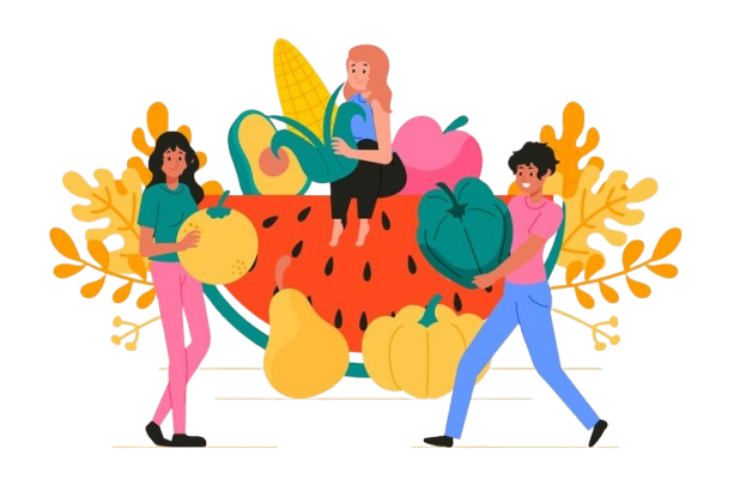

Apple (n) = ផ្លែប៉ោម
Banana (n) = ចេក
Orange (n) = ក្រូច
Mango (n) = ស្វាយ
Papaya (n) = ល្វីង
Pineapple (n) = ម្នាស់
Watermelon (n) = ផ្លែករុង
Grapes (n) = ទំពាំងបាយជូរ
Lemon (n) = ក្រូចឆ្មា
Lime (n) = ក្រូចឆ្មាបៃតង
Strawberry (n) = ផ្លែស្ត្របឺរី
Blueberry (n) = ផ្លែប៊្លូប៊ឺរី
Raspberry (n) = ផ្លែរ៉ាស្បឺរី
Blackberry (n) = ផ្លែប្លាកប៊ឺរី
Cherry (n) = ផ្លែចេរី
Peach (n) = ផ្លែភីច
Pear (n) = ផ្លែប៊ែរ
Plum (n) = ផ្លែផ្លាំ
Apricot (n) = ផ្លែអាព្រីខត
Kiwi (n) = ផ្លែកីវី
Coconut (n) = ដូង
Avocado (n) = អាហ្វូកាដូ
Pomegranate (n) = ផ្លែទទឹម
Grapefruit (n) = ក្រូចថ្លុង
Jackfruit (n) = ខ្នុរ
Durian (n) = ឌូរៀន
Lychee (n) = លិចឈី
Longan (n) = លុងហ្គាន
Dragon fruit (n) = ផ្លែព្រហ្មពិឃាត
Guava (n) = ទទឹម
Mangosteen (n) = មង្គូស្ទីន
Starfruit (n) = កណ្ដោលផ្លែឈើ
Passion fruit (n) = ផ្លែផាសិន
Fig (n) = ផ្លែក្លឹប
Dates (n) = ខ្ចី
Olive (n) = ផ្លែអូលីវ
Cantaloupe (n) = ផ្លែប៉ោមលឿង
Honeydew (n) = ផ្លែមេឡុនបៃតង
Persimmon (n) = ផ្លែប៉ាពូណេ
Sapodilla (n) = ផ្លែឡូលូ
Rambutan (n) = សៅមៅ
Breadfruit (n) = ផ្លែទំពាំង
Mulberry (n) = ផ្លែតութ
Cranberry (n) = ផ្លែក្រែនប៊ឺរី
Tamarind (n) = ខាត់ណា
Gooseberry (n) = ផ្លែគូសប៊ឺរី
Medlar (n) = ផ្លែម៉េដ្លា
Jujube (n) = ផ្លែជូជូប
Soursop (n) = ផ្លែខ្នុរត្នោត
Apple : A round fruit, usually red, green, or yellow, sweet or slightly sour.
Banana : A long, curved fruit with soft sweet flesh and yellow skin.
Orange : A round, juicy fruit with orange skin, full of vitamin C.
Mango : A tropical fruit with sweet yellow or orange flesh.
Papaya : A large fruit with orange flesh and black seeds inside.
Pineapple : A tropical fruit with rough skin and sweet, juicy yellow flesh.
Watermelon : A large fruit with green skin, red flesh, and black seeds.
Grapes : Small round fruits, purple, green, or red, often used to make wine.
Lemon : A yellow fruit with sour juice.
Lime : A small green fruit, sour like a lemon.
Strawberry : A small red fruit with tiny seeds on its skin, sweet and juicy.
Blueberry : A small round blue fruit, sweet or slightly sour.
Raspberry : A small red or black fruit made of many tiny round parts.
Blackberry : A dark purple fruit, similar to raspberry, but bigger.
Cherry : A small round fruit, red or black, sweet or sour.
Peach : A round fruit with soft skin, yellow or pink flesh, and a big seed inside.
Pear : A sweet fruit with green or yellow skin and soft white flesh.
Plum : A small fruit, purple, red, or yellow, with a big seed inside.
Apricot : A small orange fruit with soft flesh and a single pit.
Kiwi : A brown fruit with green flesh and tiny black seeds.
Coconut : A large round fruit with hard shell, white flesh, and coconut water inside.
Avocado : A green fruit with creamy flesh and one large seed.
Pomegranate : A round fruit with thick red skin and many small juicy seeds.
Grapefruit : A large citrus fruit, sour and slightly bitter.
Jackfruit : A very large fruit with rough skin and sweet yellow flesh inside.
Durian : A very large fruit with rough skin and sweet yellow flesh inside.
Lychee : A small fruit with rough red skin and sweet white flesh.
Longan : A small brown fruit with sweet white flesh, like lychee.
Drakon fruit : A pink fruit with green scales and white or red flesh.
Guava : A round fruit with green skin and white or pink flesh.
Mangosteen : A purple fruit with sweet white segments inside.
Starfruit : A yellow-green fruit shaped like a star when cut.
Passion : A small round fruit with hard shell and juicy seeds.
Fig : A small sweet fruit with purple or green skin and many seeds.
Dates : Sweet brown fruits that grow on palm trees.
Olive : A small green or black fruit, often used for oil.
Cantaloupe : A melon with orange sweet flesh.
Honeydew : A melon with light green flesh.
Persimmon : A round orange fruit, very sweet when ripe.
Sapodilla : A brown fruit with sweet, grainy flesh.
Rambutan : A hairy red fruit with sweet white flesh.
Breadfruit : A large green fruit, cooked like a potato.
Mulberry : A small dark purple fruit, similar to blackberry.
Cranberry : A small red sour fruit, used in juice.
Tamarind : A brown pod fruit with sour pulp inside.
Gooseberry : A small green or red fruit, sour and juicy.
Medlar : A small brown fruit, soft when ripe.
Jujube : A small fruit, red or brown, sweet like a date.
Soursop : A green fruit with spiky skin and sour white flesh.
Ackee : A tropical fruit, yellow when ripe, often cooked.
